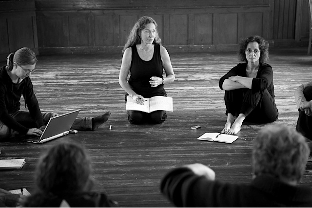

Femdagerskurs i Viewpoints med Grete Sneltvedt
- Dato:
- 26.11.2012 til 30.11.2012
- Start kl :
- 10:00
- Slutt kl :
- 16:00
- Pris:
- 1100,-
- Adresse:
- Norsk Skuespillersenter, Welhavensgate 1, Oslo
 Kroppen i språket for scenekunstnere
Metoden gir scenekunstneren en praktisk teknikk for arbeidet med hele skuespillerens instrument; kroppen og stemmens bevegelse i tid og rom. Teknikken hjelper skuespilleren til å ta intuitive valg på scenen, forholde seg åpen og lyttende til det som utspiller seg rundt henne/ham, for så å bruke denne oppmerksomheten og bevisstheten i møtet med medspillere og skuespill. Bevegelse og lyd springer ut fra kroppen og stemmen og en bevissthet og oppmerksomhet på elementene som skaper grunnlaget for ulike bevegelsesuttrykk, stemmens lydkvaliteter, vibrasjon og energi er kvaliteter som vil virke direkte inn på arbeidet med teksten og scenene.
{kind=link}
Morgenøkten starter med oppvarming av kropp og stemme, i par og/eller alene og deretter skal vi ha en to timers treningsøkt som tar utgangspunkt i Viewpoints-metoden. Arbeidet fokuserer på prinsipper for bevegelse i tid og rom, med både kropp og stemme. Vi jobber fra 10.00 – 16.00, inkludert en times lunsjpause.
Under ettermiddagsøkten vil vi arbeide med improvisasjoner, komposisjoner med utgangspunkt i et felles tekstmateriale; en scene. Fokus i møtet med skuespillet går gjennom språket snarere enn gjennom karakterene, og det bygger på formelle og kompositoriske prinsipper heller enn psykologiske, logiske og rent narrative.
Teksten vil bli sendt til hver enkelt deltager i god tid innen workshopen slik at alle kan lære den. Den siste dagen vil vi avslutte med sceniske komposisjoner og kanskje åpne workshopen for interesserte. Dette er opp til deltagerne.
Workshopen vil gi scenekunstnere en mulighet til å arbeide sammen uten press og krav til resultat. Deltagerne vil ha tid og anledning til å utforske arbeidet med Viewpoints elementer innenfor rammen av treningen, improvisasjoner og komposisjoner koblet direkte til et tekstmateriale.
Det vil være plass til 12-14 deltagere.
I min teaterundervisning tar jeg utgangspunkt i prinsipper for bevegelse i tid og rom. Inspirasjonen til dette arbeidet har jeg bl.a. hentet fra Viewpoints-metoden slik den er utviklet for teater av Anne Bogart og Tina Landau, skapt av Mary Overlie for dansere. Men også fra mitt årelange arbeid med prof. dr. Jurij Alschitz og den russiske tradisjonen han tilhører, samt fra ulike stemmepedagoger og deres forhold til pust, stemme, tekst, handling og komposisjon.
Grete Sneltvedt er scenekunstpedagog, sertifisert av the European Association for Theatre Culture. Ledet SCUT 1997–2003 (Scandinaviskt Centrum för Utforskning av Teater). Hun er utdannet skuespiller med skuespillerutdannelse fra Oslo, Stockholm og London, samt en rekke kurs og workshops i ut- og innland fram til dags dato. Hun er lektor med hovedfag i teater, bosatt på Åland, med Norden som arbeidsfelt. Nå leder hun LumparLab Teaterförening på Åland og er ansvarlig for en rekke internasjonale teaterlaboratorier, workshops og samarbeidsprosjekter. Hun underviser på prosjekter for profesjonelle skuespillere og regissører i Europa.
Pris for medlemmer av Norsk Skuespillerforbund: 1000,-